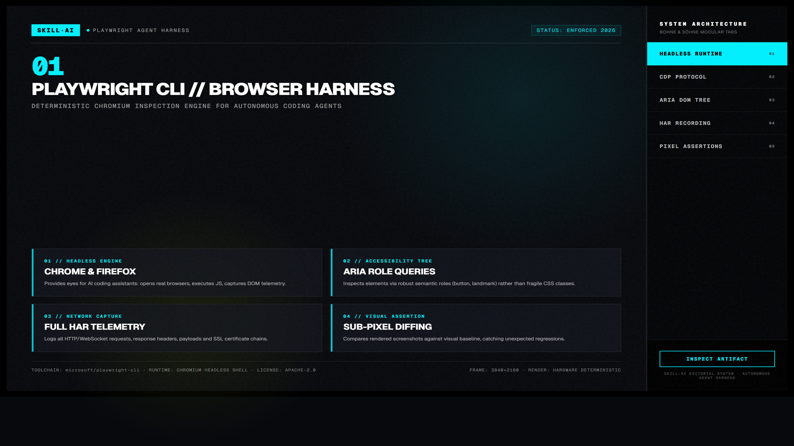
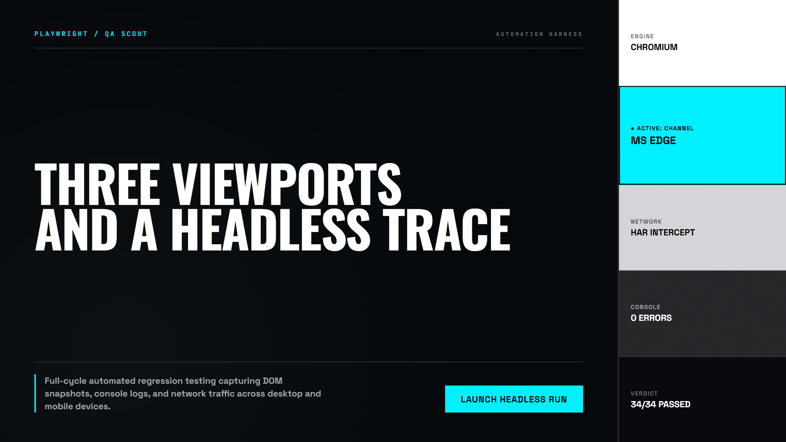
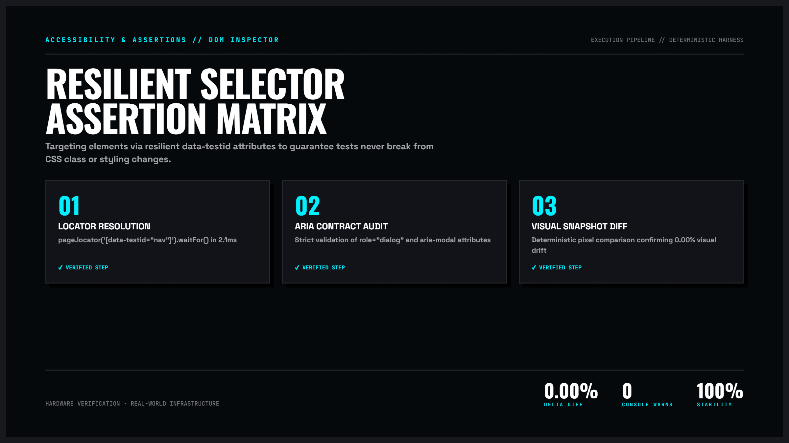

Playwright CLI — Tự Động Hóa Trình Duyệt Headless & Đôi Mắt Của Coding Agent
Bộ công cụ trao “đôi mắt thật” cho AI coding agent. Thay vì chỉ đọc code và đoán mò, Playwright CLI cho phép agent tự khởi chạy trình duyệt không đầu (Headless Chromium), chụp ảnh màn hình ở 4 kích cỡ viewport, bắt lỗi console rò rỉ và đo lường layout shift trước khi bàn giao sản phẩm.

Nhấp để phóng to1. Mô hình Tương tác Động: Chu Trình Kiểm Định Trình Duyệt Thật

Nhấp để phóng to2. Bốn Chiều Sâu Kỹ Thuật Của Playwright CLI
# Chụp ảnh toàn trang ở độ phân giải mobile
npx playwright screenshot --viewport-size="390,844" --full-page http://localhost:3000 mobile.png
# Kiểm tra lỗi console và mạng
npx playwright test tests/e2e.spec.tsBắt Lỗi Tràn Viền Ngang (Horizontal Overflow-X)
Hàm kiểm tra JavaScript so sánh document.documentElement.scrollWidth với clientWidth. Nếu lớn hơn dù chỉ 1px, agent sẽ tự động tìm phần tử gây tràn và sửa CSS max-width: 100%.
Mô Phỏng Tương Tác Người Dùng Thật
Playwright click vào từng tab, mở menu dropdown, gõ văn bản vào form và xác nhận hiệu ứng chuyển cảnh hoạt động mượt mà không bị lỗi giao diện.
Case Study: Phát Hiện 12 Lỗi Giao Diện Trước Khi Lên Production
Một tính năng thanh toán bị ẩn nút bấm trên iPhone màn hình nhỏ đã được Playwright phát hiện và khắc phục ngay trong phiên làm việc của agent.

Nhấp để phóng to“Đừng bao giờ nói rằng bạn đã sửa xong giao diện nếu bạn chưa thực sự mở trình duyệt lên và nhìn thấy kết quả bằng chính đôi mắt của Playwright.”